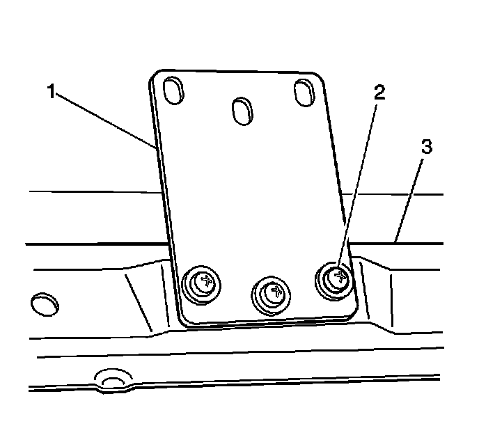
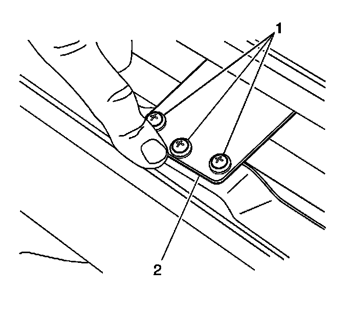

Sunroof Rear Vent Window Hinge Plate Replacement
Sunroof Rear Vent Window Hinge Plate Replacement
Removal Procedure
1. Remove the rear vent window. Refer to Sunroof Window Replacement (Front) (Service and Repair)Sunroof Window Replacement (Rear Vent) (Service and Repair)Sunroof Window Replacement (Center) (Service and Repair)Sunroof Window Replacement (Rear Stationary) (Service and Repair) .

2. Place the rear vent window upside down on a clean protected surface.
3. Remove the hinge plate screws (2).
4. Remove the hinge plates (1) from the window frame (3).
Installation Procedure

1. Position the hinge plates (2) to the frame on the rear vent window.
2. Loosely install the hingeplate screws (1).
Notice: Refer to Fastener Notice (Fastener Notice) .
3. Move the hinge plates fully forward.
Tighten the screws to 5 N.m (44 lb in).
4. Install the rear vent window. Refer to Sunroof Window Replacement (Front) (Service and Repair)Sunroof Window Replacement (Rear Vent) (Service and Repair)Sunroof Window Replacement (Center) (Service and Repair)Sunroof Window Replacement (Rear Stationary) (Service and Repair) .